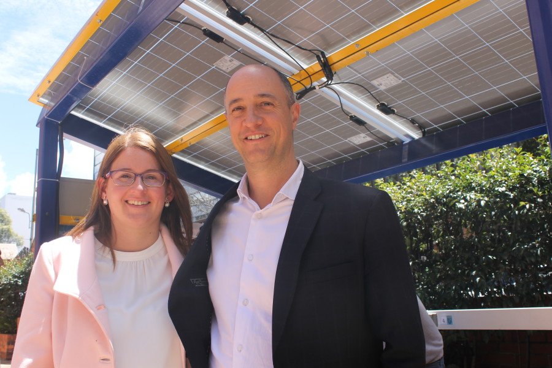

ESTACIONES DE CARGA
"Las estaciones de recarga para bicicletas eléctricas están compuestas por paneles solares, almacenadores de energía y tomas eléctricas. “Los paneles solares no son suficientes para proveer la carga a las bicicletas eléctricas; por eso, se implementan almacenadores de energía, que juegan el papel de baterías en el proceso”."
Estas pueden ser encontradas a la derecha e izquierda entrando a la universidad. No tienen ningun costo para el estudiante y el espacio de carga tambien funciona como parqueadero para la bicicleta electrica.
